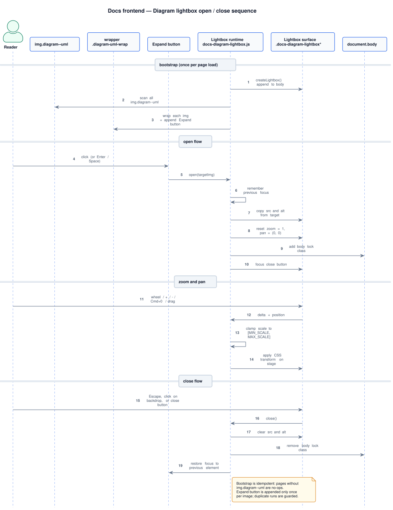

Docs frontend diagrams and lightbox Component
Docs portal · Diagrams & lightbox
Overview
This page describes the frontend implementation contract for technical diagrams in docs pages: how PlantUML images are embedded, how the expand-to-lightbox flow works, and what must be verified when contributors change diagram behavior.
Scope and integration model
- Runtime file:
docs/assets/docs-diagram-lightbox.js. - Style layer:
docs/assets/docs.cssselectors.diagram-uml-wrap,.diagram-expand-btn, and.docs-diagram-lightbox*. - Binding target: all
img.diagram--umlin page content. - Progressive enhancement: the image remains readable without JavaScript; JS adds wrapper and expand control.
- Feature ID:
DFEAT-017in architecture map ledger.
Runtime behavior
Lightbox open and close flow
From bootstrap to focus-restoration on close. Uses the contract documented below.

docs/uml/sequences/lightbox_open_close_sequence.puml
| Step | Implementation details |
|---|---|
| Bootstrap | On load, runtime creates lightbox DOM once (createLightbox()) and appends it to <body>. |
| Target discovery | At DOMContentLoaded, runtime scans img.diagram--uml, wraps each with .diagram-uml-wrap, and appends Expand button. |
| Open flow | open() copies image source/alt into lightbox image, resets zoom/pan, stores previous focus, and moves focus to close button. |
| Close flow | close() clears source/alt, removes body lock class, and restores focus to the previously active element. |
| Zoom controls | Wheel zoom and toolbar buttons use clamped scale between MIN_SCALE=1 and MAX_SCALE=6, then apply CSS transform on stage. |
| Pan controls | When zoomed above 1x, drag pan is enabled for mouse and touch; viewport toggles is-panning class for cursor feedback. |
| Keyboard | Escape closes; +/= zoom in; -/_ zoom out; Cmd/Ctrl+0 resets. |
Visual reference
The sequence diagram above describes how the lightbox boots and closes. This section
describes what readers see: the surface controls (close × button, zoom toolbar, image stage)
and what happens at each zoom step. The same image renders at three clamped zoom levels —
1× (rest), 3× (mid-zoom, pan engaged), 6× (MAX_SCALE).
Lightbox surface controls and zoom levels
Top: full-scale anatomy with annotations for the close button, zoom toolbar, image stage, and keyboard hint strip. Bottom: three thumbnails showing what the reader sees at 1×, 3×, and 6× with a pan reticle.
MIN_SCALE = 1, MAX_SCALE = 6).
Why the pan reticle. At 1× the entire diagram is visible, so dragging is
disabled and the reticle covers the whole frame. As zoom climbs, the reticle shrinks to show what
slice is in view; the runtime toggles the is-panning class only when zoom is above
1×, so the cursor swaps to grab/grabbing only when panning is meaningful.
Why the keyboard strip lives in the surface. The lightbox is a focus trap; making the shortcut hints visible on-screen means the reader doesn't have to recall them from a separate reference. The strip uses neutral on-dark contrast so it doesn't compete with the diagram itself.
Configuration and tuning constants
| Constant | Default | Impact |
|---|---|---|
MIN_SCALE |
1 |
Minimum zoom level and baseline for resetting pan offsets. |
MAX_SCALE |
6 |
Upper zoom bound; higher values increase precision but also risk usability/performance issues. |
WHEEL_FACTOR |
0.002 |
Mouse wheel sensitivity. |
BTN_FACTOR |
1.25 |
Step multiplier for toolbar and keyboard zoom actions. |
Safety checklist for changes
- Verify open/close flow with keyboard and mouse; focus must return to the original trigger after close.
- Verify wheel zoom, button zoom, and keyboard zoom in light and dark themes.
- Verify drag pan only starts when zoomed above baseline and works for both pointer and touch.
- Verify body scroll lock while lightbox is open and release after close.
- Verify all target pages still render diagrams correctly without JS errors.
- When constants are changed, document the rationale in
docs/CHANGELOG.mdand update this page.
Per-component states and accessibility
| Component | States | Role / ARIA | Keyboard | Reduced motion | Screen-reader announcement |
|---|---|---|---|---|---|
Diagram trigger (<img>) |
default, hover (cursor: zoom-in), focus, activated | Image with descriptive alt; wrapping <button>-styled link. |
Enter/Space activates and opens lightbox | Skip zoom-in cursor animation | The image's alt text, then "press Enter to expand" |
| Lightbox dialog | opening, open (1×), zoomed, panning, closing | role="dialog" + aria-modal="true"; aria-labelledby points to the diagram caption; focus trap; restores focus to launcher on close |
Esc closes; +/− zoom; arrow keys pan; Tab traps inside the dialog | Skip zoom and pan transitions; open / close instantly | "Diagram opened in fullscreen, press Escape to close" |
| Lightbox close button | default, hover, focus | aria-label="Close diagram viewer" |
Tab reaches it inside the trap; Enter closes | No motion | "Close diagram viewer, button" |
Do's and Don'ts
| Do | Don't |
|---|---|
Embed diagrams as <figure> with a rendered <img> from a PlantUML source — small payload, lightbox-friendly. |
Inline SVG large enough to need a lightbox — slows page paint and defeats the purpose of the viewer. |
| Author diagrams in PlantUML per ADR 0020. | Use Mermaid or any other diagramming syntax — portal style is PlantUML-only. |
Load docs-diagram-lightbox.js only on pages that ship diagrams. |
Add it to the global template — paying the runtime cost on every page is wasteful. |
Verify keyboard close (Esc) and focus restoration to the launching <img>. |
Leave focus stranded on document.body after closing — screen-reader users lose place. |
Page history
| Date | Change | Author |
|---|---|---|
Added the Visual reference section: full-scale anatomy of the lightbox surface (close button, zoom toolbar with +/−/⊙ controls, image stage with a sample diagram, keyboard hint strip) plus a three-thumbnail zoom-level series at 1×, 3×, and 6× with a pan reticle that shrinks as scale climbs. |
Ivan Boyarkin | |
| Added Per-component states and accessibility section (trigger, dialog, close button). | Ivan Boyarkin | |
| Added Component badge to H1; added Do's and Don'ts section (PNG vs inline SVG, PlantUML-only, opt-in loading, focus restore). | Ivan Boyarkin | |
Added implementation contract for diagrams and docs-diagram-lightbox.js behavior. |
Ivan Boyarkin |